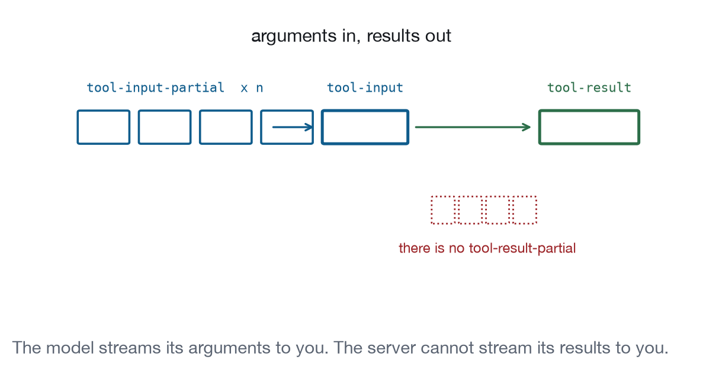

Chapter 19
Tool Invocation and Streaming
The view can call server tools without the model's involvement, receive arguments before they finish arriving, and take delivery of a result it was rendered for.
Your view can call server tools itself. No model sits between the click and the call.
That is the point of this chapter. tools/call from a view is not asking the agent to do something. It is a straight line: view, host, server, view. Nothing is sampled and nothing enters the conversation.
How do I refresh my data?
tool.invokeCoreLevel 4On the wireCall a server tool from a button, through the host.
- Messages
tools/callserverToolsvisibility- Ground
- The MCP Apps extension defines a message for it.
- Recipes
- Data Explorer, Dashboard, Agent Control Center
- Demo
- lab-tools
Send tools/call. The host proxies it to the server when hostCapabilities.serverTools is present, and you get back a standard CallToolResult.
The design decision here is tool visibility. A tool’s _meta.ui.visibility array controls who can call it. ["model", "app"] is the default and means both. ["app"] means the view only: the host must not show it in the agent’s tool list, and cross-server calls are blocked.
Extracted from from apps/recipes/r13-settings/server.js
save_preferences: {
description: "Persist preferences. Called by the view.",
inputSchema: { type: "object" },
visibility: ["app"],
run: (values) => {Use ["app"] for anything that exists to serve the interface: refresh, save, validate, load a page of results. Two benefits, and both are larger than they sound. The model’s tool list stays short, which measurably improves its choice among the tools that remain. And a save that the model cannot call is a save that the model cannot decide to call.
Application behaviour. Check the capability at initialisation; a view whose refresh button cannot work should not have one. Disable the control while a call is in flight, or make it idempotent, because users press buttons twice. Keep the last good data on screen while the new call runs.
Failure modes. Unsupported means no serverTools, and the view is reduced to whatever arrived in its initial tool result. That is a real Level 1 host and every recipe here still renders under it. Denied is a JSON-RPC error from the host. Failed is a result with isError: true, which means the tool ran and did not work, and its text is meant to be read by a person.
How do I render before the arguments arrive?
tool.partialInputCoreLevel 4On the wireRender something useful while arguments are still streaming.
- Messages
ui/notifications/tool-input-partialui/notifications/tool-input- Ground
- The MCP Apps extension defines a message for it.
- Recipes
- Agent Control Center
- Demo
- lab-tools
The host sends ui/notifications/tool-input-partial zero or more times while the model is still writing the arguments, then exactly one ui/notifications/tool-input with the complete set.
The partial arguments are best-effort recovered JSON: the host closes unclosed brackets and braces to produce a valid object. So fields appear, change, and occasionally disappear between notifications.
Extracted from from apps/labs/lab-tools/index.html
bridge.on("toolinputpartial", ({ arguments: args }) => {
$("#title").textContent = args?.region
? `Weather in ${args.region}` : "Weather in";
$("#args").textContent = "Arguments still arriving: "
+ JSON.stringify(args ?? {});
});
bridge.on("toolinput", ({ arguments: args }) => {
$("#title").textContent = `Weather in ${args?.region ?? "nowhere"}`;
});What this is worth. It is the difference between an application that feels instant and a spinner that lasts as long as the model takes to write a JSON object. Press “Stream the tool input” in the demonstration and watch the title fill in as "Nor" becomes "Nordics".
The rules. Never act on partial arguments. Never fire a request, never write anything, never treat a field as final. Render a skeleton and fill it in. Handle fields appearing and changing between notifications without throwing. The whole thing is optional in both directions: a host may send none, and a view may ignore all of them, and both are conformant.
How does the result reach me?
tool.resultCoreLevel 4On the wireTake delivery of the result that this view was rendered for.
- Messages
ui/notifications/tool-resultui/notifications/tool-cancelled- Ground
- The MCP Apps extension defines a message for it.
- Recipes
- Data Explorer, Dashboard, Monitoring Console
- Demo
- lab-tools
ui/notifications/tool-result carries the standard CallToolResult for the call that rendered this view. ui/notifications/tool-cancelled arrives instead, with a reason, if it did not complete.
The two channels, again. content is what the model reads; structuredContent is what your view reads and never reaches the model. Chapter 2 made the case; here is the concrete version from a working server:
Extracted from from apps/recipes/r01-data-explorer/server.js
return {
content: [{ type: "text", text: summarise(rows) }],
structuredContent: { deployments: rows },
};summarise(rows) produces “8 deployments. Worst p95 is 1290ms on billing.” The eight full records go in structuredContent. The model gets a sentence it can reason with; the view gets the data it can render; nobody pays for eight rows of JSON in the context window.
Cancellation is not an error. Keep the last good state, say what happened, and do not blank the view. The demonstration’s cancellation control leaves the table populated and explains that the call was stopped.
tool.cancelCoreLevel 4Core MCPCancel a call the user has stopped caring about.
- Messages
notifications/cancelled- Ground
- Core MCP defines it; the view inherits it.
- Recipes
- Agent Control Center
- Demo
- lab-tools
Cancelling a call the user has stopped caring about is core MCP’s notifications/cancelled, carrying the id of the request being abandoned. The view sends it, the host relays it, and the server stops if it can. Chapter 16 covers what the interface has to do afterwards, which is the harder half: a cancelled call leaves the view holding an optimistic state that never became true, and rolling it back honestly means saying how far the work actually got.

Can the server stream results to me?
tool.partialOutputCoreLevel 4Not standardisedUpdate stable elements as results arrive, not after.
- Ground
- No standard mechanism exists yet. The entry carries a workaround.
- Recipes
- Monitoring Console, Agent Control Center
- Demo
- lab-tools
No, and this is the most consequential gap in Part III.
A tool result arrives once, when the tool finishes. There is no ui/notifications/tool-result-partial. Input streams to you; output does not.
For anything that produces results progressively, a log tail, a long generation, a scan over many objects, the view has three options and none of them is good.
Poll. Call an app-visible tool on a timer. Simple, works everywhere, wastes a call whenever nothing changed, and the interval is a guess.
Push through repeated results. A host that re-sends ui/notifications/tool-result as new data arrives gives you a stream, which is what Recipe 9’s demonstration does. Nothing forbids it, and nothing requires it, so it is not something you can build on across hosts.
Chunk into many calls. Ask for a page at a time. This turns a stream into pagination, which changes the interface and is sometimes fine.
notifications/progress helps a little, because it carries a message string, but it is a progress report rather than a result channel and the extension does not list it among the notifications a view receives.
What a mechanism would look like. A ui/notifications/tool-result-partial mirroring the input side, with the same “never rely on it, always get a final one” contract. The asymmetry between input and output streaming is hard to justify from the view’s point of view: the model streams its arguments to you and the server cannot stream its results to you.
Design around it. Update stable elements in place rather than rebuilding. Recipe 9 appends rows and never redraws the list, so selection and scroll survive. Whatever your streaming mechanism turns out to be, that discipline is what keeps it usable, and it is the discipline the conformance checks assert.
Four things called “a tool call”
It is worth putting the whole tool picture in one place, because four different things in this book are all called “a tool call” and they are not the same.
| Direction | Message | Needs | Used for |
|---|---|---|---|
| View to server | tools/call |
hostCapabilities.serverTools |
Refresh, save, load |
| Model to server | tools/call |
Nothing from the view | The call that rendered you |
| Model to view | tools/call |
appCapabilities.tools |
Agent acting on the interface |
| View to model | sampling/createMessage |
hostCapabilities.sampling |
Private completions |
The second row is the one people forget is different. Your view exists because the model called a server tool; the result arrives as a notification rather than as a return value, and the view never sent anything. Everything else in the table is a call your code makes or answers.
Failure modes across the group
Unsupported. No serverTools means no refresh, no save, no pagination. The recipes all render from their initial tool result under this condition, which is worth testing rather than assuming.
Denied. The host may refuse a specific call on policy grounds even with the capability present. Report its message.
Failed. isError: true with readable text. Keep the last good state.
Cancelled. Either direction. Keep the last good state and say where it stopped.
Timeout. Give every call a deadline. A host that never answers is indistinguishable from a slow server, and a spinner with no end is the worst of the five failure modes because it never resolves into anything the user can act on.
Conformance checks
tools/callfrom the view reaches the server and its result returns.- A tool with
visibility: ["app"]is absent from the agent’s tool list. - A cross-server call for an app-only tool is refused.
ui/notifications/tool-inputarrives exactly once, after any partials.- Partial arguments are recoverable JSON and never a fragment.
ui/notifications/tool-resultcarries the standard result shape.- With
serverToolsabsent, the view sends notools/call.
What to remember
tool.invoke is the workhorse of Part III and the one most applications under-use, because it is easy to think of every server round trip as a conversation. It is not. A refresh button that calls an app-only tool is cheaper, faster, more reliable and more testable than anything routed through a model, and it is the mechanism that lets a view be an application rather than a rendering of one turn.